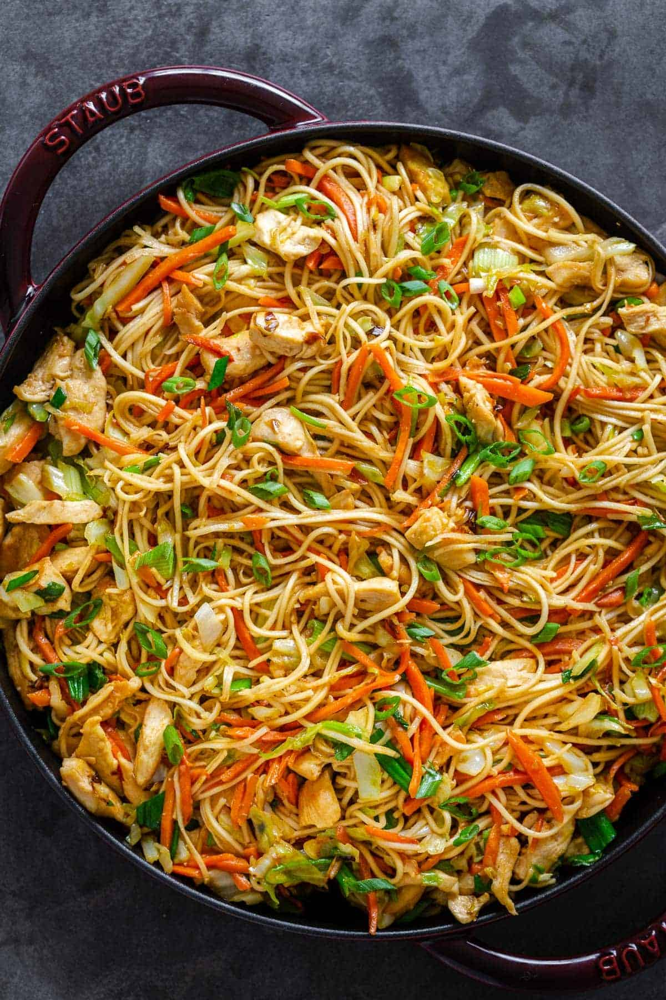

Chicken Chow Mein

Chicken Chow Mein is a classic Chinese stir-fry dish made with tender
noodles, juicy chicken, and crisp vegetables like cabbage, carrots, and
bell peppers. It’s tossed in a savory soy-based sauce that’s slightly
sweet and flavorful, creating a delicious balance of textures and tastes.
Served hot, it’s a satisfying and flavorful meal perfect for any occasion.
Ingredients
- 1 lb chicken breast, boneless, skinless
- 3 Tbsp oil
- 12 oz chow mein noodles, (uncooked noodles)
- 2 cups cabbage
- 1 large carrot, julienned
- 1/2 batch green onions
- 2 garlic cloves
Chow Mein Sauce
- 4 Tbsp oyster sauce, or added to taste
- 3 Tbsp low sodium soy sauce
- 3 Tbsp light sesame oil
- 1/2 cup chicken broth
- 1 Tbsp corn starch
- 1 Tbsp granulated sugar
Directions
-
In a small mixing bowl, use a whisk to combine oyster sauce, granulated
sugar, sesame oil, soy sauce, chicken broth and cornstarch. Set aside.
-
Cook your noodles according to package instructions then drain, rinse
with cold water and set aside.
-
Heat a large wok or pan with olive oil over medium-heat. Cut your
chicken breasts into bite-sized strips and cook them in the oil until
golden brown. Remove strips and set aside.
-
Add carrots, cabbage and pressed garlic and saute for a few minutes
until veggies are slightly softened and the cabbage is a bit
translucent.
-
Add chicken and noodles back into the pan. Pour sauce over the top and
continue cooking all the ingredients together for another 2 minutes.
-
Garnish your chow mein with chopped green onions and serve the noodles
straight from the pan and piping hot!
- Enjoy!
Home